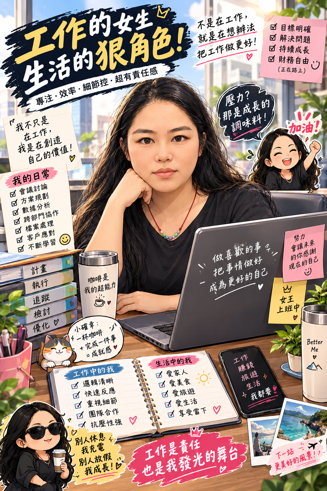
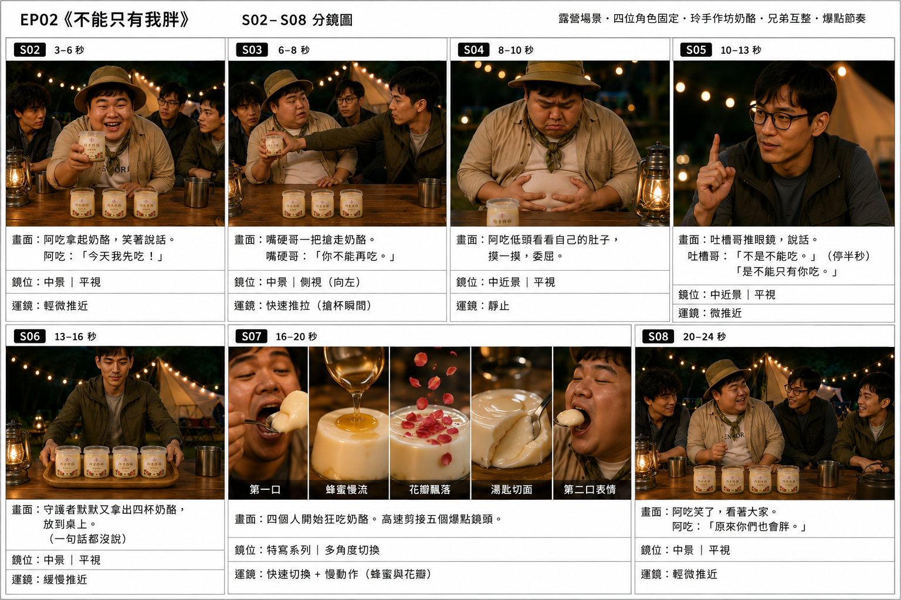
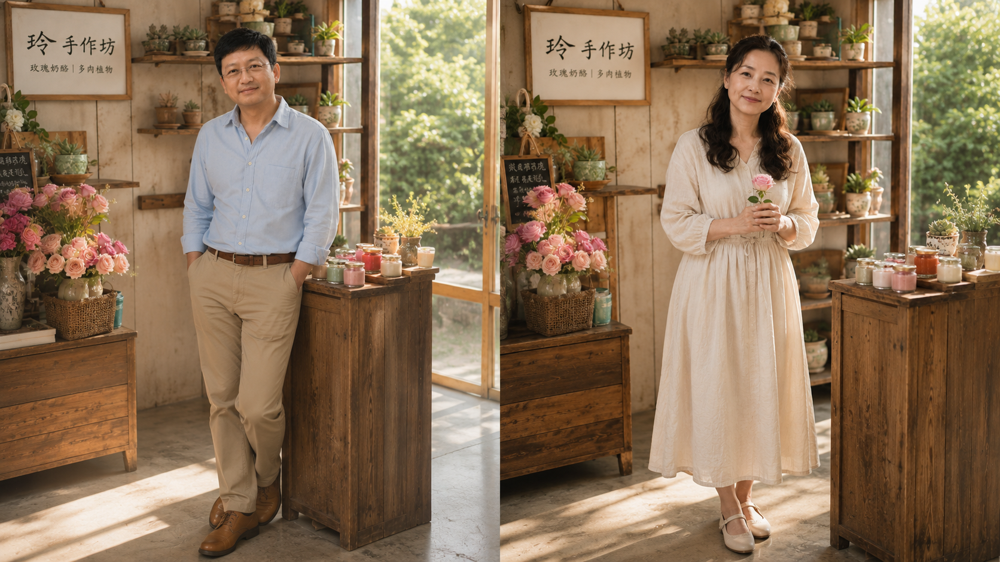
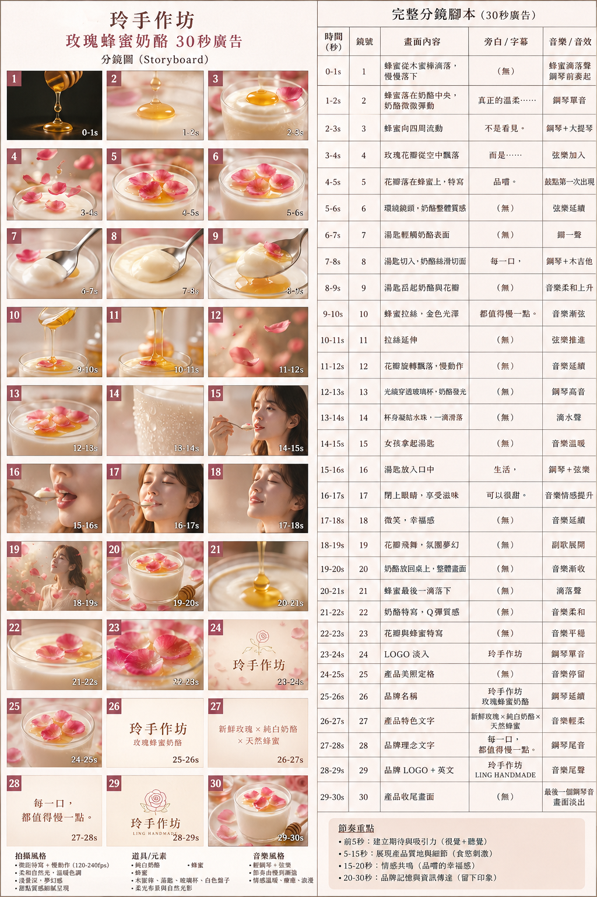

2007.12 — 2020.11
13 YEARS
13 YEARS
台經公寓大廈管理股份有限公司
停車場管理員
售票／收銀人員｜桃園市中壢區
- 停車場車輛進出人工收費管理
有 13～14 年工作經驗，長期累積服務、營運、收銀與管理經驗；近期重新進修 AI 影音相關課程，希望把 AI、設計與內容能力實際應用在行政、美編、產品企劃與行銷工作中。

我是蕭明秀。學校畢業後即進入服務業工作，感謝過去主管給予學習機會，也在不同工作經驗中學會與不同個性的人相處、合作與溝通。離開學校多年後，我重新進修 AI 影音相關課程，希望把新的能力帶回職場。
我對工作的期待，是完成被賦予的使命與任務，持續朝專業目標前進，並為公司創造更多貢獻。
長期累積現場管理、營運、服務、收銀與人員協作經驗，現在希望把這些實務能力延伸到行政、企劃與行銷工作。
售票／收銀人員｜桃園市中壢區
售票／收銀人員
國內業務｜台東縣台東市
融資／信用業務人員
儲備幹部｜管理 9～12 人｜台東縣台東市
以下分成履歷中明確列出的技能，以及作品集實際使用的 AI／設計／影音工具，避免把「學過」與「做過」混在一起。
作品案例中實際應用於品牌企劃、AI 圖像、角色設定、分鏡、Prompt、短影音與網站製作。

不是只展示圖片，而是把企劃思考、製作流程與最後成果一起呈現。

玫瑰奶酪 × 多肉植物的品牌定位、視覺與故事創作。
VIEW PROJECT →角色、場景、分鏡、Prompt 與 AI 短影音流程。
VIEW PROJECT →以「山上的茶葉蛋」建立品牌故事與產品記憶點。
VIEW PROJECT →
從產品賣點到 30 鏡頭廣告分鏡與感官視覺。
VIEW PROJECT →以企劃思考為起點，再進入設計、AI 生成、優化與後製。
資料處理科
高職畢業
1996/09 — 1998/06
希望性質：全職工作
上班時段：日班
可上班日：錄取後一週可上班
希望待遇：月薪 35,000 元以上
希望地點：桃園市中壢區、平鎮區、龍潭區
遠端工作：有意願
駕照：普通重型機車
交通工具：普通重型機車
在漫長的職業生涯中，我一直希望把被交付的任務做好。現在重新學習 AI 影音與數位工具，是希望讓過去累積的工作經驗，和新的技能真正接上線。
我不一定是最會說的人，但我願意學、願意做，也希望在新的職場中，把事情一步一步做好。
如果你正在找行政、行政助理、美編助理、產品企劃或行銷助理人選，歡迎直接聯絡我。